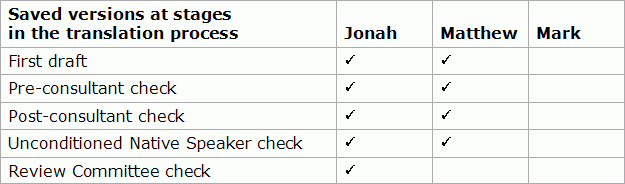

Saving a version of a book
In Translation Editor, a saved version is a collection of Scripture books at one stage in the translation process. Saved versions are part of the FieldWorks project.
In the future, you might compare a saved version to the current version of a book.
Here is a chart of the process: saving versions of Scripture books.
